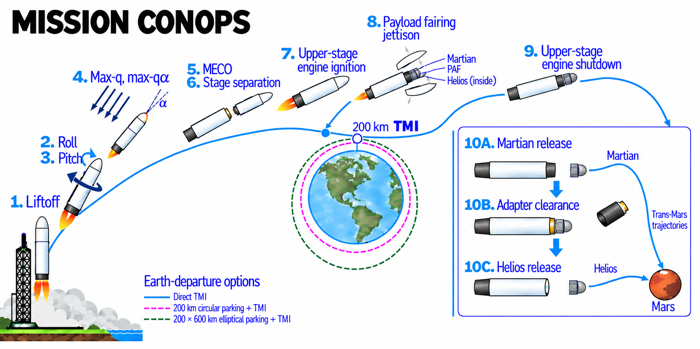
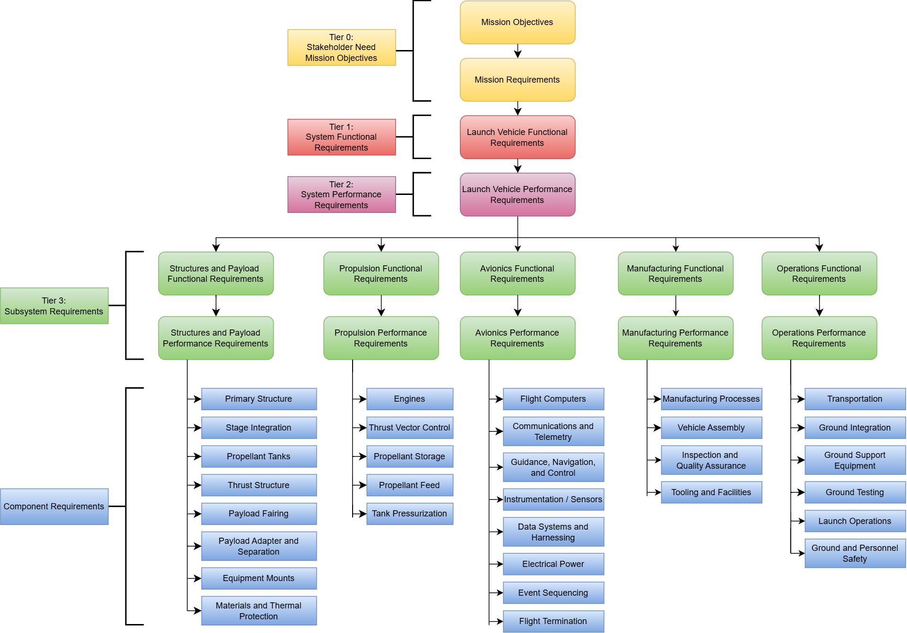

In progress / AE443 / Senior design / At the SRR / SDR checkpoint
University of Illinois Urbana-Champaign · AE443 · Fall 2026 · Team A
Kairos launch vehicle: requirements and system integration
Our senior-design team is developing a launch service to send two Kairos spacecraft toward Mars. My work connects the customer mission to vehicle and subsystem requirements, a shared configuration, and the operations sequence that the design must support.
- My contribution
- Systems engineering and vehicle integration, with GNC / avionics integration responsibilities. I developed the requirements architecture and ConOps diagram, reviewed the requirement baseline, investigated reusability and rideshare, and coordinated configuration across disciplines.
- Tools
- Systems engineering · Requirements traceability · Vehicle integration · Architecture trades
- Current status
- SRR / SDR materials submitted; preliminary architecture defined. Design closure and verification remain in progress.

Deliver a fixed customer payload to a Mars-bound trajectory
The RFP treats this as a launch-service acquisition: Martian and Helios must fly together, with a combined customer spacecraft mass of approximately 4,313 kg. The vehicle must achieve a physically feasible Trans-Mars Injection (TMI), then separate both spacecraft independently. Interplanetary cruise, Mars capture, and final mission insertion belong to the spacecraft.
The customer leaves the launch site, staging, propellants, engine cycle, vehicle dimensions, and recovery strategy to the team. We must justify those choices while closing performance, payload interfaces, loads, cost, risk, and the development schedule. The RFP specifies the 2034 opportunity and an 8–11 km²/s² preliminary C₃ sizing range. The working baseline records instructor approval to study an earlier, April 2033 departure; the final window and capability still require confirmation.
Mature the design through formal reviews
We are at the combined System Requirements Review / System Definition Review (SRR / SDR) checkpoint. The submitted package establishes the mission, requirements, operations concept, and preliminary architecture. The October 1 status report records the presentation and review feedback as pending.
PDR must show that the integrated preliminary vehicle closes. CDR must bring the design, interfaces, loads, and verification approach to a more mature definition. The final course deliverable is a customer-facing launch vehicle provider guide, an engineering model, and a technical defense.
- RFPCustomer mission and payload interfaces
- SRR / SDRRequirements and system architectureCurrent checkpoint
- PDRIntegrated preliminary design closure
- CDRMature design and verification planning
- Provider guideCustomer package, model, and defense
Initial work: define the vehicle and its operations
My initial work focused on the requirements architecture, the ConOps diagram, and coordination between vehicle disciplines. I also investigated reusability and rideshare and helped prepare the SRR / SDR material. The ConOps turns the assignment into an operating sequence: liftoff, ascent, staging, TMI, and independent spacecraft separation.
The preliminary concept uses two stages: methane / liquid oxygen with four Raptor 3 engines for the first stage, and hydrogen / liquid oxygen with one BE-3U for the upper stage. The SRR / SDR presentation identifies Kennedy Space Center, a 5.4 m vehicle diameter, a 77.3 m overall height, and a 14 m fairing with vertically stacked spacecraft. These are team design selections that remain subject to maturation.
The reusability and rideshare work examines whether added development cost and complexity would benefit this customer mission. Direct injection, circular parking orbit, and elliptical parking orbit remain in the departure-strategy comparison.
After SRR / SDR, my next work is to incorporate review feedback and coordinate shared design values with mission, propulsion, structures, and simulation contributors. The team still needs a consistent mass budget and demonstrated mission-performance closure before PDR. These initial selections establish a design direction; they are not a completed launch vehicle.
Initial work: map the requirements from mission to components
I defined a trace-down structure that connects the customer mission to launch-vehicle functions, performance, and subsystem responsibilities. The complete diagram shows how that structure reaches the component level across structures and payload, propulsion, avionics, manufacturing, and operations. It provides a shared framework for developing the design and planning verification as the project progresses.

